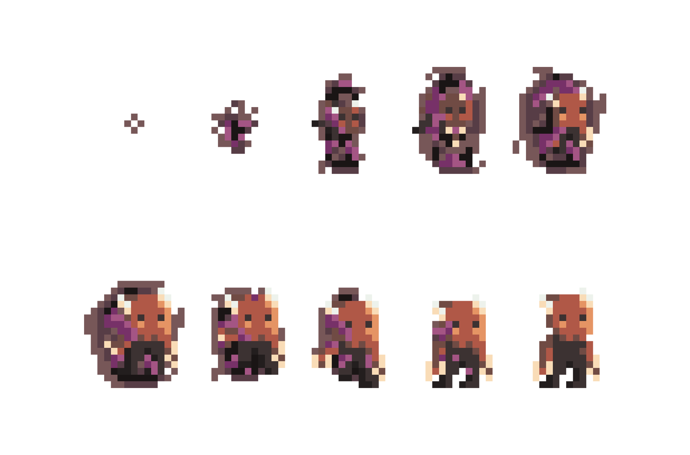

HeLLin
HeLLin is a simple wave-based pixel-art shooter game created by small gamed studio.
The player takes on the role of a rambo-commander character. The goal of this game is to survive as long as possible among a huge amount of enemies.
It's a simple game at first, but the further into the forest the harder it gets and it gives a lot of fun from the beginning.
Here you can find out how it all came about.
The player takes on the role of a rambo-commander character. The goal of this game is to survive as long as possible among a huge amount of enemies.
It's a simple game at first, but the further into the forest the harder it gets and it gives a lot of fun from the beginning.
Here you can find out how it all came about.
01 The birth of an idea at the first
First thing is a concept/idea for a game. HeLLin was supposed to be dynamic, simple and good-looking game.
We decided to make something like Mario Bros and Karlson The Game by Dani.
Therefore many platforms and a lot of easy enemies in a short period of time.
We divided the game into waves, where every next wave has more enemies.
We decided to make something like Mario Bros and Karlson The Game by Dani.
Therefore many platforms and a lot of easy enemies in a short period of time.
We divided the game into waves, where every next wave has more enemies.

02 Levels design is just simple
Our goal in make HeLLin was to create easy in art, good looking game with well levels, enemies, commander and light.
Enemies are a small easy to win happy devils.
Locations change during the game from devil’s library to neon China’s town by mountains, forest, graveyard, ship deck and spaceship.
At some levels the light is dim, while others are even glowing.
Enemies are a small easy to win happy devils.
Locations change during the game from devil’s library to neon China’s town by mountains, forest, graveyard, ship deck and spaceship.
At some levels the light is dim, while others are even glowing.
03 AI the intelligence of opponents
Enemies are creature, which finding the best and shortest way to current position of player commando.
And it was our the biggest problem.
It was our first time with something like this, so we encounter with many, many bugs and stupid behaviors, like enemies stacking or spawn on / too near player.
AI in HeLLin was completed at the end and we worked on in the longest.
And it was our the biggest problem.
It was our first time with something like this, so we encounter with many, many bugs and stupid behaviors, like enemies stacking or spawn on / too near player.
AI in HeLLin was completed at the end and we worked on in the longest.

04 Sounds music theme and sfxs
After some work, when we had firsts script, AI and levels, time at sounds had come.
We had to prepare the appropriate music theme, sounds and sfxs.
Music theme had to be once for all levels and game.
Every heart-loss, kill and death must had own sounds.
It was very hard to pair it with others elements, but finally we made it.
We had to prepare the appropriate music theme, sounds and sfxs.
Music theme had to be once for all levels and game.
Every heart-loss, kill and death must had own sounds.
It was very hard to pair it with others elements, but finally we made it.


05 Test and publish the most time consuming
Mistakes are always made and there was no shortage of it here.
We tested and tried HeLLin on many computers in many environments and we eliminated every problem immediately.
Things what was the worts are definitely AI and sounds.
Finally, after 3 weeks, we published it and felt great reefiest and joy.
We tested and tried HeLLin on many computers in many environments and we eliminated every problem immediately.
Things what was the worts are definitely AI and sounds.
Finally, after 3 weeks, we published it and felt great reefiest and joy.